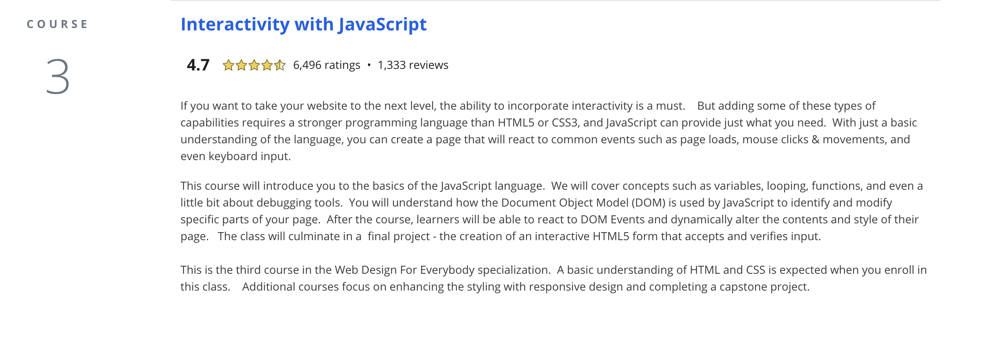

3
實作二：第四週課堂project
這個project的目標為設計一個程式，讓填表單的人若按下"Is the billing message the same前的勾v，程式會自動幫下面兩欄填入相同的資訊

Javascript 是一個讓網站變得具有互動性的程式語言，像是有對話框等，主要讓網站更進階的被賦予功能，使網頁的視覺效果更專業。
因為有些project需要請不同地區上這一系列課的同學評分，因此成績送出與證書的時間會比較晚
以下為其中兩個例子，使用的網站為codepen，一樣為課程老師推薦的網站，這個網站會很快的更新，使我可以一邊寫程式，一邊看看自己的程式有沒有正確，我覺得很適合練習的時候使用。
使用fumction讓我們寫一個程式，讓滑鼠移到上面時會出現反應
使用function程式碼讓我們製作 button 讓文字可以透過按button打開＆收起
結合這週教的可以放很多物件的Array和上週的Function製作一個可以自由增加內容物的程式
練習利用這週教的內容製作表單，包括填寫的格子、勾選的格子等
此project為寫程式將滑鼠移到網站下方的三張圖片後可以在上方紫色區塊顯示滑到那張圖的alt text
這個project的目標為設計一個程式，讓填表單的人若按下"Is the billing message the same前的勾v，程式會自動幫下面兩欄填入相同的資訊
在學習javascript時讓我覺得比較抽象，有時要思考一下才會了解為什麼要用function, var等屬性，來達成作業中的效果，透過課堂中code with me的影片，跟著老師一步一步的操作，才慢慢了解使用這些屬性的時機，以及大致會達成的效果。我覺得Javascript這種可以讓網頁互動呈現出來的效果真的很讓我驚艷，可以製作按鈕、或是製作生活中時常用到的電子表單，讓螢幕活潑起來，有時上網去查詢也會看到很多專業人士製作出來很厲害的程式碼，是一個可以不斷研究創新的程式。在操作實作時，有些function一開始也不知道要怎麼設定，像是最後一個project就在腦袋停留了兩天才做出來。在上課時印象最深刻的就是做實作時的心路歷程，一開始得知要做的事時，都會腦袋空白，不知道可以做什麼，但後來參考老師之前給的練習們，自己也想了一會，想到答案後馬上寫出來的快感，並且使用效果讓網頁變得更精緻！
